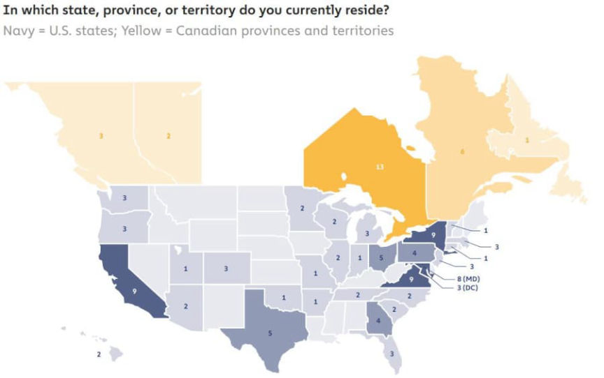
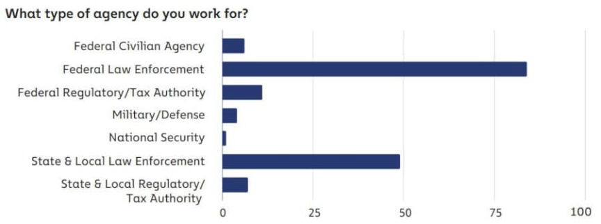
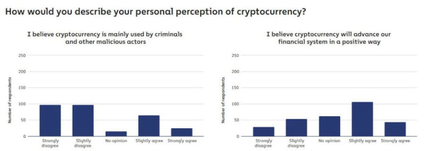
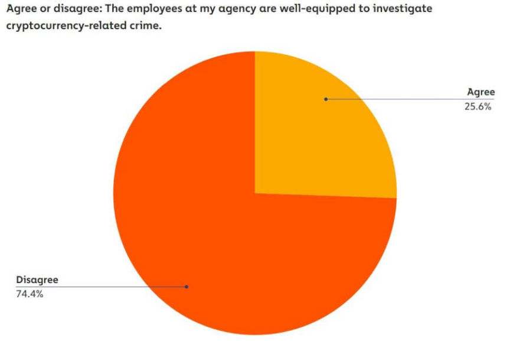
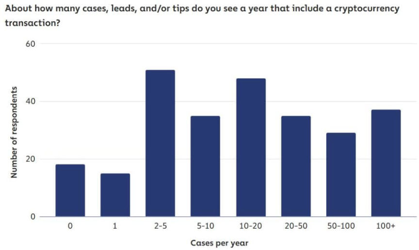
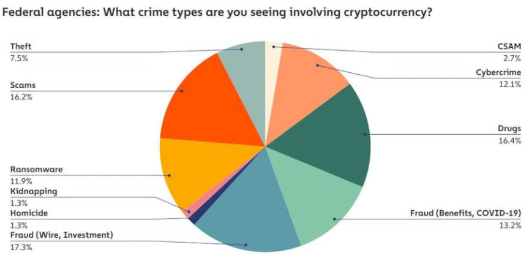
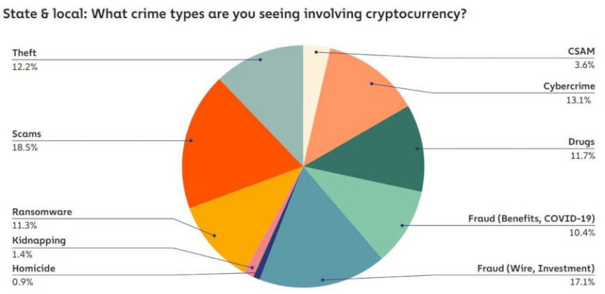
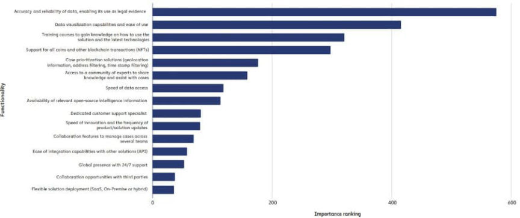
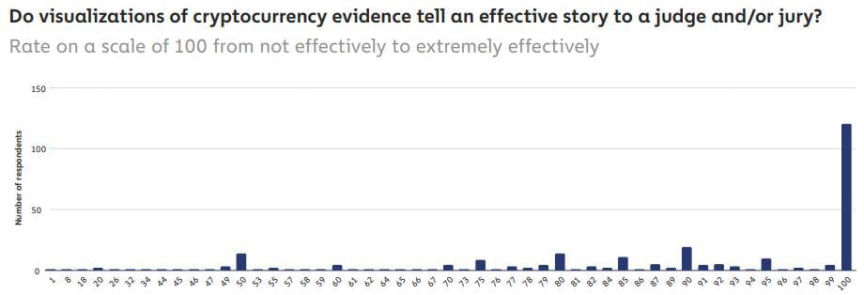
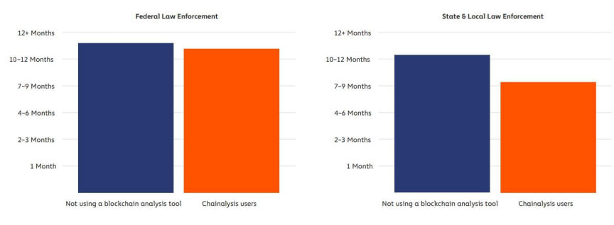

Chainalysis: Most Agencies Under-Equipped for Crypto Cases
Agencies must have been pleasantly surprised that the solution to their problems involved paying Chainalysis.
The company recently published the Chainalysis 2022 State of Cryptocurrency Investigations Survey report.<h2 id="respondent-profile">Respondent profile </h2>
Relevant public sector employees in the United States and Canada, including Chainalysis customers, partners, non-customer contacts, members of non-profit, and public sector associations partnered with the company, responded to the company’s questions.

heavy participation from employees residing in California, Maryland, New York, Virginia, and Ontario
Of the recipients, 6.8% responded to the questions, representing 300 respondents across 183 agencies.
<picture><source srcset="https://darknetlive.com/post/chainalysis-report-about-feds-needing-to-pay-chainalysis/avif/what-agency-do-you-work-for.avif" type="image/avif"><source srcset="https://darknetlive.com/post/chainalysis-report-about-feds-needing-to-pay-chainalysis/webp/what-agency-do-you-work-for.webp" type="image/webp"></picture>
Federal LEOs accounted for 52% of respondents, while 30% work in state & local law enforcement.
<h2 id="key-points">Key Points </h2>
Some of the key findings include:[list]*Public sector employees like cryptocurrency but see the downsides too. The majority of the respondents say cryptocurrency will advance our financial system in a positive way but also acknowledge that it plays a role in many of their criminal investigations.*Cryptocurrency spans all forms of criminal activity. At both the federal and state & local levels, respondents told Chainalysis that cryptocurrency is prevalent in various crime types, including narcotics, fraud, theft, and cybercrime.*Blockchain analysis tools must provide accurate data and transaction visualization above all else. Respondents pointed to accurate, reliable blockchain data and simple visualization as the most critical components of any blockchain analysis tool they use. These functionalities matter for both completing investigations and for ensuring positive results in court.*Training matters. Respondents rated effective training programs as another crucial requirement for any cryptocurrency investigative tool they purchase*Public sector employees need more resources. 74% of our respondents said employees at their agency aren’t currently well-equipped to investigate cryptocurrency-related crime.[/list]<h2 id="respondents-current-thoughts-and-attitudes-toward-cryptocurrency">Respondents’ current thoughts and attitudes toward cryptocurrency </h2>
Respondents agree that cryptocurrency is relevant to their investigations and that their agencies should dump resources into investigating cryptocurrency crimes. Respondents disagree that cryptocurrency is used primarily by criminals.

respondents agree that cryptocurrency will positively advance the financial system
Chainalysis believes that cryptocurrency is being “exploited” by criminals. 74% of respondents believe their agencies are under-equipped to investigate these crimes.
“While a majority of respondents report that their agency employs both specialized staff and tools for cryptocurrency investigations, they also seem to think those efforts aren’t enough. 74% said that their agency isn’t well-equipped to investigate cryptocurrency-related crime. That’s a huge problem not just today, but in the future as well. Cryptocurrency is a rapidly changing industry — in just the last two years, for instance, we’ve seen a huge shift in activity from centralized services to DeFi protocols, where transactions are more complex and difficult to investigate — so if agencies aren’t becoming proficient in cryptocurrency investigations now, their knowledge gaps could compound, causing them to fall further behind [em]the criminals exploiting cryptocurrency[/em] regularly.”

74% said that their agency isn’t well-equipped to investigate cryptocurrency-related crime.
<h2 id="cryptocurrency-investigations-today">Cryptocurrency investigations today </h2>
More than half of the respondents see more than ten cryptocurrency-related cases per year, 38% see more than 20, and 14% see more than 100.

There is a wide range in the number of cryptocurrency-related cases respondents see on the job
Scams and fraud are the most common types of cryptocurrency-related crimes seen by respondents. Drugs and cybercrime cases are also common.

Various types of scams and fraud are the most common types of crypto crime seen by agents.
Federal law enforcement agencies see similar rates of crimes as state and local agencies.
<picture><source srcset="https://darknetlive.com/post/chainalysis-report-about-feds-needing-to-pay-chainalysis/avif/feds-types-of-crime.avif" type="image/avif"><source srcset="https://darknetlive.com/post/chainalysis-report-about-feds-needing-to-pay-chainalysis/webp/feds-types-of-crime.webp" type="image/webp"></picture>
This chart was made for ants.
Feds see more drug and fraud cases, and state and local see more theft cases.

This chart was made for ants.
<h2 id="quotes-from-respondents">Quotes from respondents: </h2>Tell us about crime types involving cryptocurrency that you’re seeing in your investigations. [list]*“Money laundering.”*“Civil Fraud relating to income tax matters.”*“I’m seeing some [bot] generated malware incidents that target custodial wallets (ie Trezor) at the time of off boarding crypto to cold storage.”*“Rugpulls, smart contract scams.”*“I work tax investigations. Crypto is the new toy/shiny object for some [of the people we’re investigating].”[/list]What can your agency do to help you better investigate cryptocurrency-based crime? [list]*“As in a host of other areas, we need more trained, skilled people whom we cannot afford to hire.”*“Hook us up with training.”*“Host more conferences/ roundtables around cryptocurrency related crimes where best practices can be shared in appropriate settings.*“Coordinate with other agencies/regions to [em]pool funds together to afford tools[/em].”*“Accept innovation and the need for technology, [em]make investments in tools/investigators[/em] where appropriate, and coordinate with other agencies to address jurisdiction problems.”[/list]<h2 id="what-do-respondents-want-from-their-blockchain-analysis-tools">What do respondents want from their blockchain analysis tools? </h2>
Chainalsys provided respondents with a list of 15 functionalities for blockchain analysis tools and had respondents rank them on a five-point scale.
The functionalities:[list]*Accuracy and reliability of data, enabling its use as legal evidence*Data visualization capabilities and ease of use*Training courses to gain knowledge on how to use the solution and the latest technologies*Support for all coins and other blockchain transactions (NFTs)*Case prioritization solutions (geolocation information, address filtering, time stamp filtering)*Access to a community of experts to share knowledge and assist with cases*Speed of data access*Availability of relevant open-source intelligence information*Dedicated customer support specialist*Speed of innovation and the frequency of product/solution updates*Collaboration features to manage cases across several teams*Ease of integration capabilities with other solutions (API)*Global presence with 24/7 support*Collaboration opportunities with third parties*Flexible solution deployment (SaaS, On-Premise or hybrid)[/list]

This chart was made for ants.
The highest ranked functionality was accurate/reliable data. Data visualization was also highly-ranked. Chainalysis asked follow-up questions about the value of visual representations of blockchain evidence.

Chainalysis users report shorter investigation durations vs respondents w/o a blockchain analysis tool
Respondents provided quotes about the importance of visual representations of blockchain data.[list]*“It speeds up the ability to see the path of the money, ie: follow the money.”*“[Chainalysis’ visual representations] allow your brain to process the complex and often very overwhelming alphanumerical address chains and fractional amounts of various transactions almost instantaneously…”*“I use the visual depictions in your tool to show the flow of cryptocurrency and to bolster my investigative theory when I pitch a case to the US Attorney’s Office.”[/list]<h2 id="how-chainalysis-delivers">How Chainalysis delivers </h2>
Chainalysis’ survey found that users of Chainalysis benefit from using Chainalysis.

Chainalysis users report shorter investigation durations vs respondents w/o a blockchain analysis tool
Investigations without Chainalysis’ services and software take longer to complete than investigations that utilize Chanalysis’ solutions.
The report ends with a suggestion from Chainalysis. The company recommends that agencies obtain “robust blockchain analysis tools that turn crypto transactions into simple visualizations” and partner with the “private sector.”
Convenient report, Chainalysis.
Report pdf